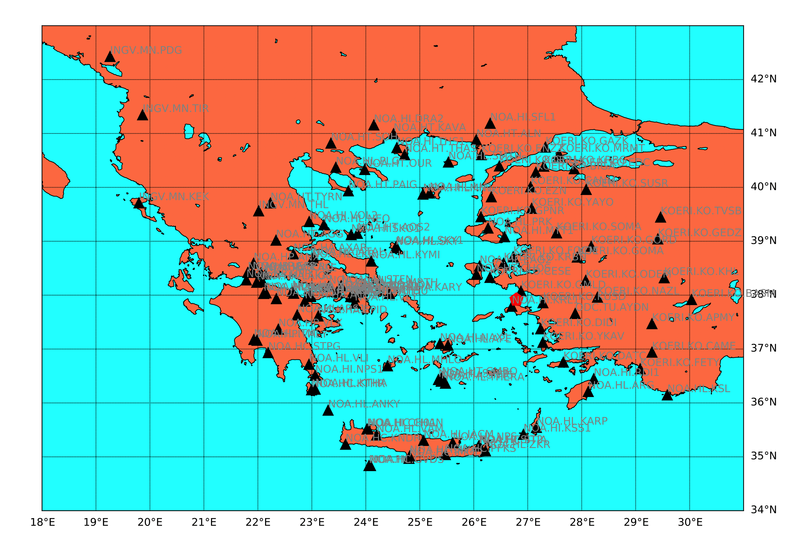
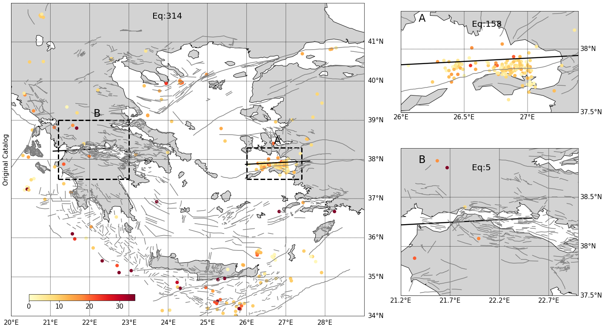

Earthquake Detection
Combining CNN and RNN in Seismic Phase Picking
Abstract
The recent expansion of seismic data and computing resources enables flourishing applications of deep learning in seismology. Many studies aim at automatically picking P and S arrivals, especially those buried in noises. Dozens of deep-learning-based models prove to be efficient in detecting phases of local events (<300km). Most of them take seismograms/spectrograms as input data and output the probability of P/S/background phases. Previous studies treat inputs as images and focus on the Convolutional Neural Network (CNN). CNNs employ filters within convolutional layers to extract features from inputs, and are often used in computer vision to recognize objects and patterns in images. Recent studies notice that input seismograms/spectrograms are sequential data, more like audio. Recurrent Neural Networks (RNN) are designed to interpret temporal or sequential information, which is widely used in speech recognition. However, RNNs cannot be stacked into very deep models, and training an RNN is a very difficult task. We solve this problem by extracting features from a pre-trained CNN model and then training an RNN on top of it. Compared with models trained directly from CNNs (PhaseNet and GPD), our hybrid model has higher accuracy and precision in the testing set. Besides, the hybrid model is more robust against low SNR of waveforms and far hypocentral distances, which indicates better generalization ability.
Introduction Slide
Case Study In Aegean Sea
Study time range: 07/01/2020 - 11/19/2020
Number of seismic stations used: 132
The following figure shows the station distribution:
Original Catalog V.S. Machine Learning Catalog
The following figure shows the earthquake distribution of Original/Machine Learning Catalog (color bar shows the depth in km):
3D Scatter Plot Of Earthquakes Near Faults
Days are relative to the origin time of Mw 7.0 earthquake on 30 October 2020.